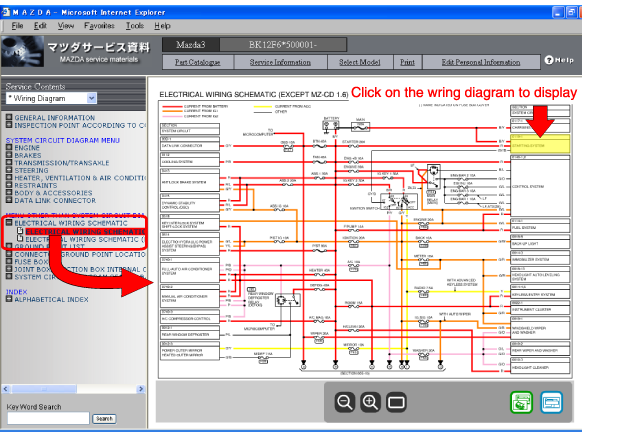
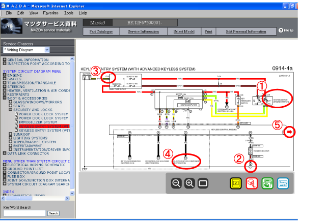
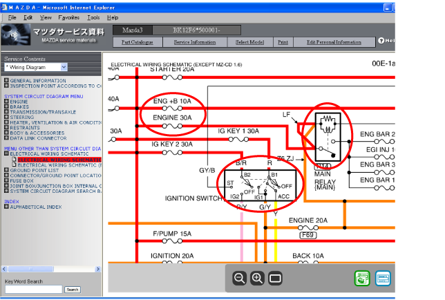
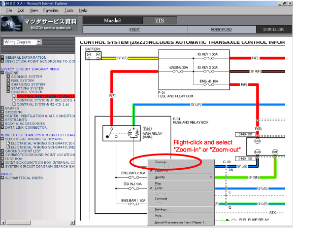
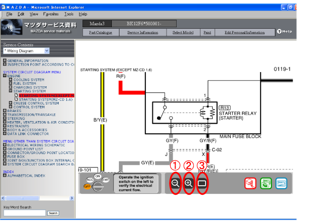
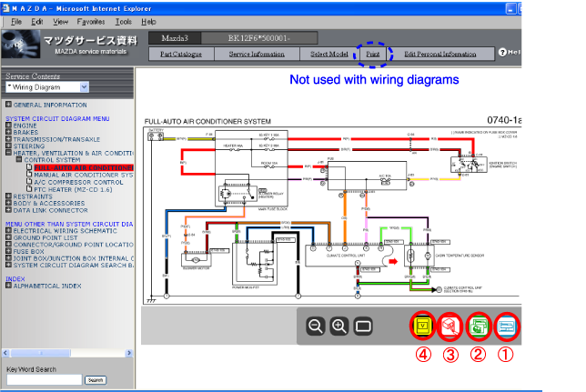

การค้นหาผังวงจรไฟฟ้าจากผังวงจรระบบแหล่งจ่ายไฟ
เลือกระบบที่ท่านต้องการดูจากผังวงจรแหล่งจ่ายไฟเพื่อแสดงข้อมูล

การใช้งานหน้าจอเบื้องต้น
การคลิกที่บริเวณต่างๆ (1) ถึง (5) จะแสดงข้อมูลที่แตกต่างกัน

(1) รหัสขั้วต่อ / ชื่อชิ้นส่วน: แสดงการวางตำแหน่งขั้วและตำแหน่งขั้วต่อนั้นๆ
(2) จุดต่อลงกราวด์: แสดงตำแหน่งจุดต่อลงกราวด์นั้นๆ
(3) ชื่อกล่องฟิวส์ (F-01, ฯลฯ): แสดงกล่องฟิวส์นั้นๆ
(4) หมายเลขการเชื่อมต่อ (แสดงว่าวงจรเชื่อมต่อกับระบบอื่น): แสดงผังวงจรไฟฟ้าที่ระบบต่ออยู่
- หมายเหตุ
ถ้าวงจรเชื่อมต่อกับระบบอื่นๆ สองระบบขึ้นไป หรือถ้ามีการเปลี่ยนแปลงเนื่องจากชนิดเครื่องยนต์ จากนั้น รายการออฟชั่นต่างๆ จะปรากฏขึ้น
(5) ลูกศรสีแดง: ลูกศรสีแดงแสดงว่าผังวงจรไฟฟ้าประกอบด้วยหลายหน้า คลิกที่ลูกศรสีแดงเพื่อแสดงหน้าก่อนหน้านี้หรือหน้าถัดไป
การใช้งานหน้าจอเบื้องต้น (ผังวงจรระบบแหล่งจ่ายไฟ)
คลิกสวิตช์สตาร์ท รีเลย์ หรือฟิวส์บนผังวงจรระบบแหล่งจ่ายไฟเพื่อแสดงผังวงจรไฟฟ้าซึ่งชิ้นส่วนที่เลือกทำงาน

การซูมเข้า / ออก
คลิกขวาบนหน้าจอที่ท่านต้องการซูมเข้า / ออก และเลือก “Zoom-in” หรือ “Zoom-out” คลิกขวา และเลือก “Zoom-in” หรือ “Zoom-out”

ใช้ปุ่ม (1) ถึง (3) ที่ด้านล่างเพื่อซูมหน้าจอเข้าหรือออก

พิมพ์
ปุ่ม (1) ถึง (4) ที่ด้านล่างขวาของหน้าจอสามารถใช้เพื่อพิมพ์ตามที่ท่านต้้องการได้

(1) การพิมพ์วงจร: สามารถพิมพ์ผังวงจรที่แสดงได้เท่านั้น
(2) การพิมพ์วงจร ตำแหน่ง และขั้วต่อ: สามารถพิมพ์ผังวงจรระบบ แผนผังขั้วต่อและแผนผังตำแหน่งที่มีได้
(3) การพิมพ์รายการขั้วต่อร่วม: สามารถพิมพ์รายการขั้วต่อร่วมได้
(4) การพิมพ์รายการแรงดันไฟฟ้าขั้ว: ตารางแรงดันไฟฟ้าขั้วของระบบที่มีสามารถเปิดในรูปแบบ PDF และพิมพ์ได้